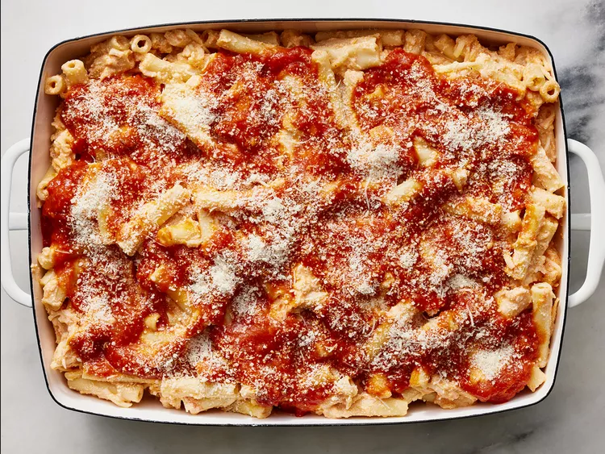

Ziti

Description
Ziti is a type of pasta that originated in Italy and is commonly used in Italian cuisine.
It is a tube-shaped pasta that is similar to penne, but with a larger diameter and smoother surface.
Ziti is typically made from durum wheat semolina and water, and it can be cooked in a variety of ways, such as boiled, baked, or fried.
It is commonly used in baked pasta dishes, such as ziti al forno, which is made with tomato sauce, mozzarella cheese, and sometimes meat or vegetables.
Ziti is a versatile pasta that can be used in many different recipes, and it is a popular choice for Italian-American comfort food.
Ingredients
- 1 (16 ounce) package ziti pasta
- 24 ounces ricotta cheese
- 1 pound shredded mozzarella cheese
- 1 egg, beaten
- 1 (32 ounce) jar spaghetti sauce
- ¼ cup grated Parmesan cheese
Steps
-
Preheat the oven to 375 °F (190 °C).
Lightly grease a 9x13-inch baking dish.
-
Meanwhile, bring a large pot of lightly salted water to a boil.
Add ziti and cook for 8 to 10 minutes or until al dente; drain and rinse.
-
Combine cooked ziti, ricotta cheese, mozzarella cheese,
egg, and 1 ½ cups spaghetti sauce in a medium bowl.
-
Transfer into the prepared baking dish.
Top with remaining spaghetti sauce, then sprinkle with Parmesan cheese.
-
Bake in the preheated oven for 30 minutes; let stand for 15 minutes before serving.
See more recipes